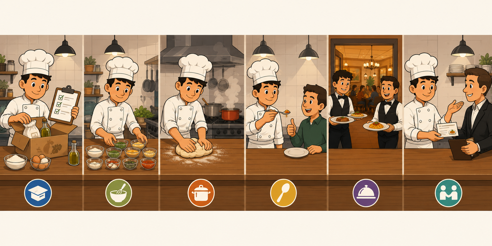
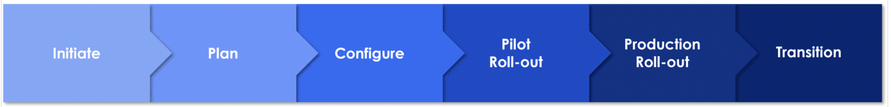
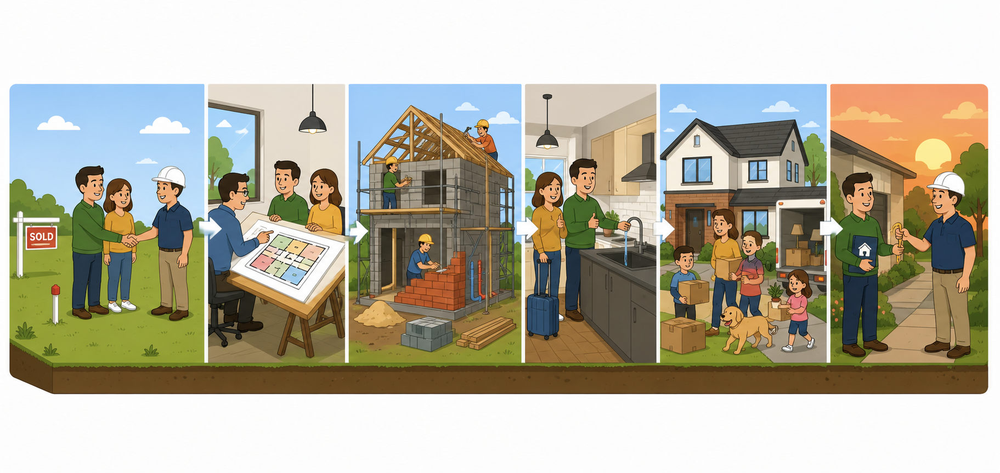
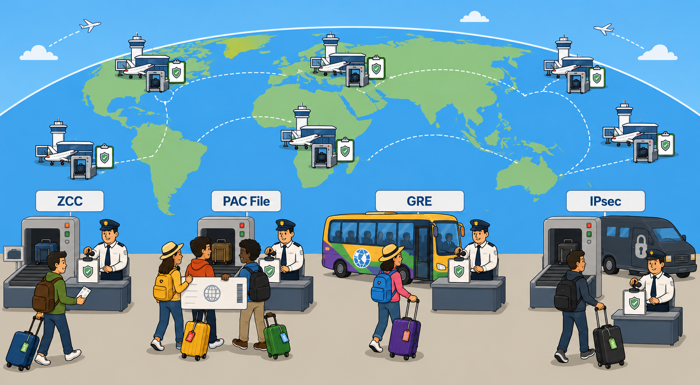
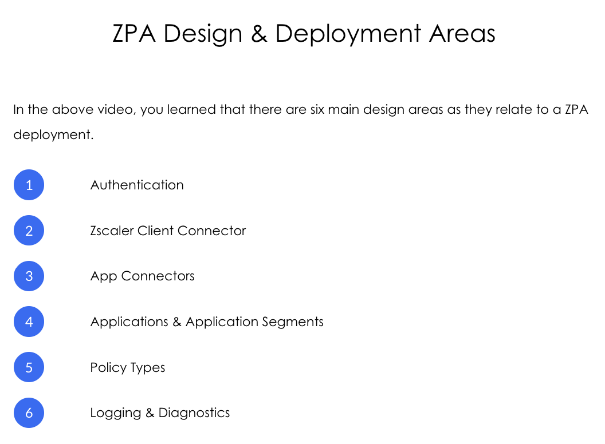
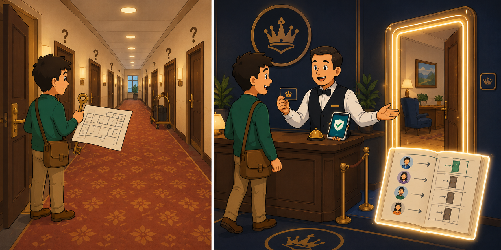
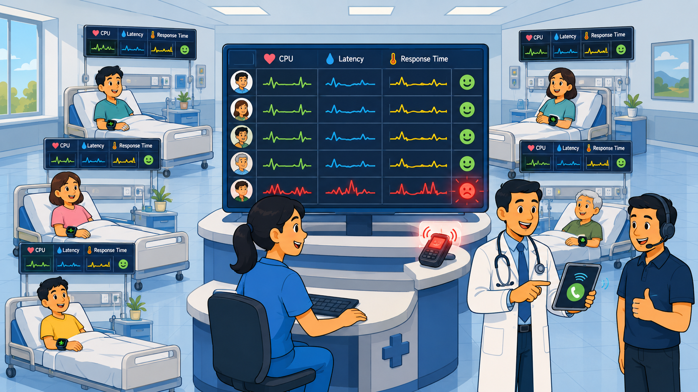
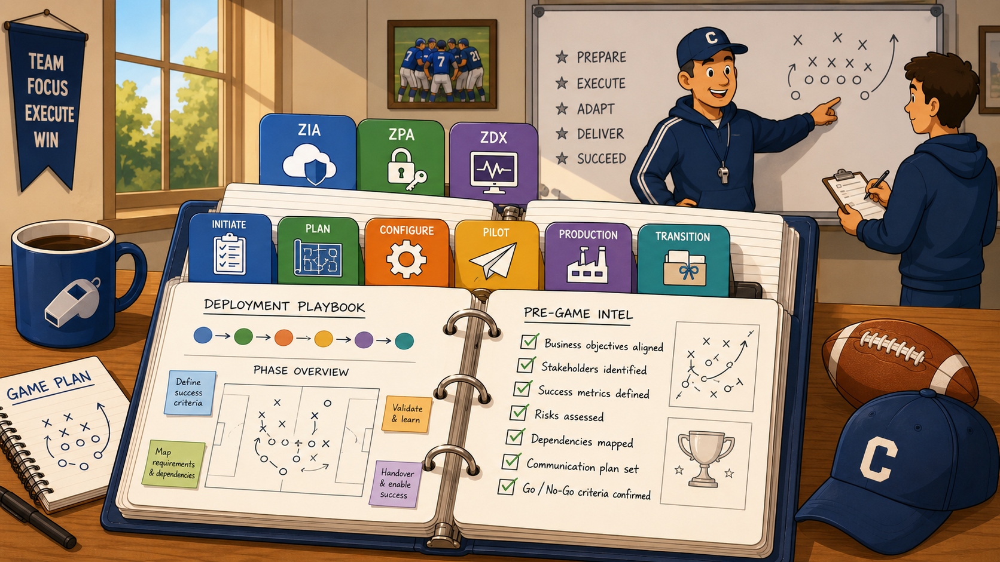

Zscaler's proven six-phase delivery framework — who runs it, what each phase produces, and how the methodology shapes ZIA, ZPA, and ZDX deployments end-to-end.
Methodology is the connective tissue of every deployment.
Without a phased framework, every customer engagement reinvents itself — risky, slow, inconsistent. The six phases (Initiate → Plan → Configure → Pilot → Production → Transition) give every Delivery Consultant the same scaffolding to fit ZIA, ZPA, and ZDX work into.
💭THINK FIRST · COURSE OVERVIEW
A methodology is just a list of stages on paper — until you understand why each stage is positioned where it is. Before you read this overview, think about why every successful Zscaler deployment passes through the same six gates, and what would break if you tried to skip any of them.
If a customer is in a rush and asks you to skip the Pilot phase and go straight to Production, what specifically becomes more expensive — and to whom?
Methodology phases look generic on the surface (Initiate, Plan, Configure...). What makes Zscaler's six phases tailored to a SaaS security deployment rather than a generic IT project?
Three of the eight lessons in this course are about ZIA, ZPA, and ZDX specifically. Why do those three services need separate design discussions rather than one combined "Zscaler deployment" lesson?
Q1 — MODEL ANSWER
Skipping Pilot moves risk from a small, controlled blast radius (a pilot group of ~30 users) to the entire user base. If something is misconfigured — a traffic-forwarding rule, an SSL inspection exception, a policy precedence — you discover it in production with 5,000 users instead of 30. The expense is paid in P1 tickets, lost user trust, and emergency rollbacks. The customer feels the urgency cost; you feel the credibility cost.
Q2 — MODEL ANSWER
Three signals tell you it's SaaS-security-shaped: (1) the Initiate phase explicitly verifies the customer's subscription/edition entitlements — that only matters for SaaS sold by SKU; (2) Configure includes SSL inspection and policy precedence as first-class deliverables — perimeter security concerns; (3) Transition hands the customer a Final Design Document — because the platform is tenant-configured rather than rack-installed, the document IS the deliverable. Generic IT methodology has none of these baked into the phase names.
Q3 — MODEL ANSWER
Each service has fundamentally different deployment surface area. ZIA forwards user traffic via tunnels/PAC files to a cloud edge — its design questions are about traffic forwarding, edition entitlements, SIEM logging. ZPA flips connectivity inside-out via App Connectors and has its own object model (Application Segments, Segment Groups, Connector Groups, Server Groups). ZDX is monitoring-only — no traffic forwarding decisions, but lots of probe configuration. One blended lesson would lose the specific design questions each service forces.
COURSE OVERVIEW
Welcome to Zscaler Deployment Methodology
This course gives you Zscaler's proven approach to running a successful deployment — the same delivery and engagement methodology used across every paid Professional Services engagement. The course is structured in three blocks of content:
Deployment Specialists — who they are and what exactly they do
Deployment Methodology — the six phases of delivery: Initiate, Plan, Configure, Pilot Roll-out, Production Roll-out, Transition
Design & Deployment Overviews — ZPA, ZIA, and ZDX deployments, design areas, and considerations
Course objectives: Describe who Deployment Specialists are and their role · Describe the phases of the Deployment Methodology · Discuss the primary steps in designing and deploying ZIA, ZPA, and ZDX.
🧠
MENTAL NOTE
Course = 3 blocks: (1) Role · (2) Six-phase methodology · (3) Per-service design overview for ZIA, ZPA, ZDX. The six phases are the spine — everything in blocks 1 and 3 hangs off it.
Analogy
Deployment methodology is a recipe. The Initiate phase confirms you have the ingredients (and that you ordered the right kind of flour). Plan is mise en place — measuring everything out before you cook. Configure is the actual cooking. Pilot is a tasting spoon. Production is plating up for the whole dinner party. Transition is teaching the host how to reheat leftovers tomorrow. Skip a step and the dish is fine sometimes — but never reliably.

📷 A1.png — add this image to the folder
Flat minimalist cartoon illustration of a cheerful cartoon chef preparing a multi-course dinner as an analogy for deployment methodology. Wide composition with six small scenes arranged left-to-right along a long wooden kitchen counter. Scene 1 (Initiate): the chef opens a delivery box and ticks ingredients off a clipboard — flour, eggs, olive oil. Scene 2 (Plan): mise en place — every ingredient measured out into little glass bowls in a neat row. Scene 3 (Configure): hands kneading dough, pots simmering on the stove, action and steam. Scene 4 (Pilot): the chef offers a single spoonful to one curious diner sitting at the counter — the diner gives a thumbs up. Scene 5 (Production): waiters stream out of the kitchen carrying full plates to a large dining room visible through a doorway. Scene 6 (Transition): the chef hands a host a small folded recipe card and explains how to reheat tomorrow. Warm kitchen lighting, white aprons, cheerful round faces, clean geometric shapes, flat illustration style, bold outlines, simple cartoon characters, no text labels, no UI elements, educational infographic feel, modern tech-analogy aesthetic.
ASK A QUESTION
ADD A NOTE
💭THINK FIRST · DEPLOYMENT SPECIALISTS
A Deployment Specialist is the person walking the customer through the actual rollout — but they're not the customer's administrator and not Zscaler's sales engineer. They sit in between. Before reading the role description, think about what makes that middle seat different from each of the two seats on either side of it.
The Deployment Specialist's mission statement is "ensure services are delivered with the highest level of quality and satisfaction." Why is "satisfaction" included alongside "quality" — when wouldn't a high-quality deployment be a satisfying one?
One of the five responsibilities is "maintaining compliance with regulatory requirements." Why does that responsibility sit with the consultant rather than the customer's compliance team?
If you had to choose between (a) deploying every Zscaler feature the customer paid for, or (b) deploying only the features that solve the customer's stated business problem — which is the Deployment Specialist's job, and what does that tell you about scope discipline?
Q1 — MODEL ANSWER
Quality is technical correctness — the configuration works as designed. Satisfaction is the customer's felt experience of the deployment — communication, surprises avoided, perceived control, ability to walk away confident. A deployment can be technically flawless and still leave the customer feeling rushed or confused, which damages renewal. Both have to be measured.
Q2 — MODEL ANSWER
The customer's compliance team owns the regulatory outcome, but they don't know the platform. The Deployment Specialist is the only person in the room who can map a compliance constraint (e.g. "EU-only data residency", "SOC 2 logging retention") to a Zscaler configuration decision (sub-cloud choice, NSS log destination, retention setting). They translate compliance language into platform settings.
Q3 — MODEL ANSWER
(b) — deploy only what solves the customer's stated problem. Deploying every feature the customer paid for is a vanity exercise that creates surface area without proven value, and almost always leaves the customer overwhelmed and under-trained. Scope discipline means delivering the use cases agreed in the Initiate phase, and parking the rest with a clear post-deployment plan. The Deployment Specialist's job is outcomes, not feature count.
DEPLOYMENT SPECIALISTS
Who they are and what they do
A Deployment Specialist deploys and manages Zscaler's cloud security solutions for a customer engagement. Their mission: ensure services are delivered with the highest level of quality and satisfaction.
Five primary responsibilities
Plan and execute deployments — and configure / optimise security settings
Ensure seamless integration with the customer's existing IT infrastructure
Maintain compliance with regulatory requirements
Improve security posture by staying updated with latest best practices and features
Protect the organisation's internet traffic, secure user access, and enhance overall cyber-security resilience
i
NOT TO BE CONFUSED WITH
A Deployment Specialist is not the customer's day-to-day admin (that's the Administrator from EDU-200) and not the Zscaler sales engineer scoping the deal. They sit between the two, translating the signed scope into a working tenant.
🧠
MENTAL NOTE
5 responsibilities — memorise them as Plan · Integrate · Comply · Improve · Protect. The mission statement uses two words: quality + satisfaction. Both, not either.
Analogy
A Deployment Specialist is the travel agent who actually flies with you on the trip. The salesperson sold you the holiday package. The hotel concierge will look after you once you arrive. But the agent is the one on the plane next to you, double-checking the itinerary against your real expectations, swapping the boring city tour for the cooking class you'd actually enjoy, and making sure when you land, you know how to use the metro card. Their success is your trip being remembered fondly, not just completed.
📷 A2.png — add this image to the folder
Flat minimalist cartoon illustration of a travel agent escorting a happy traveller on an actual trip as an analogy for the Deployment Specialist role. Wide composition with three scenes. Scene 1 (sale): a salesperson at a travel-agency desk handing a colourful holiday brochure to a customer over a counter, smiling — cheerful office. Scene 2 (in flight): the same customer now sitting next to a smiling agent on an airplane, both buckled in, the agent pointing at a printed itinerary on a fold-down tray, with a checklist visible — friendly attentive mood, window showing sky. Scene 3 (arrival): the agent helps the customer at a hotel lobby — handing over a metro pass and pointing toward a "City Tour vs Cooking Class" sign while a hotel concierge waves from behind the desk in the background. Bright sunny travel colours, suitcases with luggage tags, cheerful round faces. Clean geometric shapes, flat illustration style, bold outlines, simple cartoon characters, no text labels, no UI elements, educational infographic feel, modern tech-analogy aesthetic.
ASK A QUESTION
ADD A NOTE
💭THINK FIRST · THE SIX PHASES
Each phase has its own methodology actions (what you do) and deliverables (what the customer ends up holding). The deliverable list is the proof that the phase happened. Before reading the phase details, think about why having a concrete artefact at the end of each phase changes the engagement dynamic.
The Initiate phase has only two deliverables: weekly status report cadence + the prerequisite checklist. Why are those two the right anchors for "we have started"?
The Configure phase has the most deliverables (Comms Plan, Pilot Test Plan, Initial Roll-out Plan). Why is so much planning artefact-work folded into the "configure" phase rather than the Plan phase?
Production Roll-out produces only the Final Design Plan. What signal does that minimalism send about what's happening (and not happening) in the Production phase?
Q1 — MODEL ANSWER
Weekly status reports establish the communication ritual — every party knows when the next checkpoint is and what to bring to it. The prerequisite checklist is the operational gate: it lists every item the customer must have ready (subscriptions, IdP details, network info, sponsor availability) before any technical work can usefully begin. Together they're the two minimum guarantees: "we'll talk" and "we have what we need to talk about". Anything else added at Initiate is premature.
Q2 — MODEL ANSWER
Plan produces the design — what the customer will end up with. Configure is where the plan meets reality, and several follow-on plans only become writable once configuration has revealed the real constraints (which users to invite to pilot, what comms cadence makes sense given the timing, how to phase roll-out by region/OS). The artefacts of Configure are the bridge between "designed on paper" and "tested with real users".
Q3 — MODEL ANSWER
It signals that Production is almost entirely support — running the rollout the Pilot phase already proved works. There's no design left to do, no new artefacts to write — just scaled execution and the final document update. If you're producing many new artefacts in Production, it usually means the Pilot phase failed to fully prove the design.
DEPLOYMENT METHODOLOGY
The Six Deployment Phases
Zscaler recommends a phased approach to planning and completing deployments. Each phase has its own methodology actions and produces specific deliverables that, together, drive a successful customer outcome.

The six Zscaler deployment phases as a left-to-right chevron pipeline — each phase darkens in shade, visualising how the project progresses from initial scoping through to final handover.
Initiate
Plan
Configure
Pilot Roll-out
Production Roll-out
Transition
1
Initiate Phase
The Initiation Phase incorporates the steps required for the Professional Services team to be assigned to a project.
METHODOLOGY
Scope Acceptance
Review Constraints
Timeline Acceptance
DELIVERABLES
Weekly Status Report cadence begins
Prerequisite checklist
2
Plan Phase
The Plan Phase incorporates the steps required for the Professional Services team to plan out the project — aligning the project plan, beginning design workshops, and providing any necessary documentation.
METHODOLOGY
Review Current Configuration
Execute Design Workshops
Provide and Review Zscaler Initial Design Document
DELIVERABLES
Zscaler Initial Design Document
3
Configure Phase
The Configure Phase incorporates the steps required for the Professional Services team to lead the customer through the configuration of the Zscaler product according to the created design.
METHODOLOGY
Execute Configuration Deep-Dive Workshops
Guide and Advise on Leading Practices
Review and Advise on Pilot Test Plan
Confirm Functional Testing
Review & Advise on Customer Roll-out Plan
DELIVERABLES
Comms Plan
Pilot Test Plan
Initial Roll-out Plan
4
Pilot Roll-out Phase
The Pilot Roll-out Phase is designed to deploy and test the use cases in order to validate functionality in a controlled environment. Ensures the configured use cases function as expected before moving to Production.
METHODOLOGY
Roll-out Pilot Users
Provide Pilot Roll-out Support
Review Pilot User Feedback
Pilot Acceptance
Finalize Production Roll-out Plan
DELIVERABLES
Production Roll-out Plan
5
Production Roll-out Phase
The Production Roll-out Phase involves increasing the quantity of users on the platform (scaling out) across all use cases within the customer's environment.
METHODOLOGY
Provide Production Roll-out Support
DELIVERABLES
Final Zscaler Design Plan
6
Transition Phase
The final stage of the project — review with the customer all work done to date, provide short-term/long-term recommendations, show a path to resolution of outstanding items, and explain how Zscaler will continue supporting their transformation journey.
METHODOLOGY
Review Project and Technical Summary
Review post-deployment plan
DELIVERABLES
Final Zscaler Design Document
🧠
MENTAL NOTE
Six phases: Initiate · Plan · Configure · Pilot · Production · Transition. Two artefacts always carry forward: the Design Document (starts as "Initial" in Plan, gets refined through every phase, ends as "Final" in Transition) and the Roll-out Plan (drafted in Configure, finalised in Pilot). Configure has the most deliverables (3); Production has the fewest (1).
Analogy
The six phases are like building a house. Initiate = signing the contract and surveying the block. Plan = an architect drawing the floor plan and you approving it. Configure = construction — walls, plumbing, wiring. Pilot Roll-out = the family moves in for a weekend to see what works before the housewarming. Production Roll-out = the full move-in with every box unpacked. Transition = the builder hands you the keys, the manual for the boiler, and the warranty book. Try skipping Pilot and you discover the shower drains backwards while sixty guests are arriving.

📷 A3.png — add this image to the folder
Flat minimalist cartoon illustration of building a family house in six stages as an analogy for the six deployment phases. Wide composition arranged left-to-right with six small scenes flowing into each other on a long grassy block of land. Scene 1 (Initiate): a friendly cartoon couple shaking hands with a builder on an empty lot, with a "Sold" sign and a survey peg. Scene 2 (Plan): the architect at a drafting table showing the couple a colourful floor plan blueprint, both nodding. Scene 3 (Configure): a half-built house with scaffolding, workers hammering and laying bricks, plumbing pipes visible. Scene 4 (Pilot): the same couple with one suitcase doing a "weekend trial stay" — they're inside the nearly-finished house testing the kitchen tap and giving a thumbs up. Scene 5 (Production): the full family with kids and a dog moving in, removal van behind, boxes everywhere, everyone happy. Scene 6 (Transition): the builder hands the homeowner a large brass house key and a bound folder labelled with a small house icon — warm sunset light, mood of completion. Clean geometric shapes, flat illustration style, bold outlines, simple cartoon characters, no text labels, no UI elements, educational infographic feel, modern tech-analogy aesthetic.
ASK A QUESTION
ADD A NOTE
💭THINK FIRST · ZIA DESIGN & DEPLOYMENT
ZIA's deployment success is largely determined by traffic forwarding — how you route customer traffic into the Zscaler edge — and by an Initial Deployment Assessment questionnaire filled out before configuration begins. Before reading on, think about why that questionnaire is the single most leveraged artefact in the entire ZIA design conversation.
Why is the customer answering a long questionnaire before the consultant even opens the admin portal? What's the cost of skipping it and discovering the same answers mid-deployment?
ZIA traffic can be forwarded via Zscaler Client Connector, PAC file, GRE, or IPSec tunnel. What customer signal pushes a design toward each one?
The ZIA design areas include logging via NSS or Cloud NSS to SIEMs like Splunk or ArcSight. Why is logging treated as a first-class design decision rather than something configured later?
Q1 — MODEL ANSWER
The questionnaire surfaces design-shaping facts you can't discover from the admin portal: existing proxy infrastructure, branch topology, identity systems, log retention obligations, regulatory regions. Skipping it means discovering them mid-Configure when a wrong assumption has already been baked into a deployed setting — usually costing a re-do of policy hierarchy or traffic forwarding configuration that's now in production use.
Q2 — MODEL ANSWER
ZCC = managed devices that travel with the user (laptops). PAC file = browser-based forwarding for environments without endpoint control. GRE = high-bandwidth office / branch routers with no encryption needed (Zscaler is the security layer, not the tunnel). IPSec = same use case as GRE but where encryption between branch and Zscaler edge is mandated. The choice is driven by who/what the user is and what infrastructure already exists at the egress point.
Q3 — MODEL ANSWER
Logs are part of the customer's compliance and incident-response posture — both legal/regulated areas. If you defer the logging decision, you risk discovering mid-rollout that the SIEM expects a specific schema, a specific retention window, or a specific transport (TLS, port). Re-routing logs after production users are live is operationally invasive. The design-time decision is "what schema to where and for how long" — and it lives next to ZIA traffic decisions because it's coupled to them.
ZIA DESIGN & DEPLOYMENT
Getting Started with ZIA
Zscaler Internet Access (ZIA) is the Zscaler-as-a-Service secure internet and web gateway — a globally distributed proxy that inspects all internet/SaaS-bound traffic against integrated threat prevention, URL filtering, sandboxing, DLP, and CASB engines. The default route to the internet runs through the Zscaler edge; that's the design starting point.
ZIA fundamental refresh: Legacy hub-and-spoke architectures backhauled all branch internet traffic to a central data centre to be inspected by appliances — slow, expensive, and limited to users in the corporate network. ZIA replaces that with a cloud edge: a single global policy engine inspects traffic at the user's nearest edge, with SSL inspection, threat prevention, and data protection delivered as a service.
How customers get their traffic into ZIA
Zscaler Client Connector (ZCC) on managed devices for mobile users
PAC files for browsers in environments without endpoint control
GRE tunnels from branch routers for high-bandwidth office traffic
IPSec tunnels when encryption between branch and Zscaler edge is required
Key design decisions for a ZIA deployment
User authentication and provisioning — IdP integration, SAML, SCIM, hosted DB or hosted file fallback
Logging and reporting — Cloud NSS or NSS to SIEM (Splunk, ArcSight) for log correlation and long-term archival
i
THE QUESTIONNAIRE-FIRST PRINCIPLE
Zscaler provides an Initial Deployment Assessment (sometimes called the Initial Design Document questionnaire). The customer fills it out before the consultant configures anything. It surfaces existing infrastructure, identity systems, and policy intent — turning the design conversation from "discovery" into "confirmation".
🧠
MENTAL NOTE
ZIA = secure internet/web gateway as a service. Four traffic-forwarding paths: ZCC · PAC · GRE · IPSec. Four design areas: Auth · Traffic Forwarding · Policy · Logging. The Initial Deployment Assessment questionnaire is the most leveraged artefact in the entire ZIA design.
Analogy
ZIA is the security checkpoint at an international airport — but instead of one checkpoint at the main terminal (legacy hub-and-spoke), Zscaler has a checkpoint at every gate worldwide. Every traveller's bag is screened against the same rulebook, by the same engines, no matter where they board. The four traffic-forwarding methods (ZCC / PAC / GRE / IPSec) are the four ways a traveller can be brought to a checkpoint — solo with their own boarding pass, with a group tour ticket, on a chartered bus, or in an armoured shuttle.

📷 A4.png — add this image to the folder
Flat minimalist cartoon illustration of a global airport with security checkpoints at every gate as an analogy for ZIA traffic forwarding. Wide composition: a circular world map with multiple small airport terminals dotted across it. Each terminal has a tiny X-ray checkpoint icon labelled with the same rulebook icon (a clipboard with a shield). Foreground: four small cartoon travellers approach four different checkpoints by four different means. Traveller 1 strolls in alone with a single boarding pass clutched in hand (ZCC). Traveller 2 walks with a small group holding one giant group ticket (PAC file). Traveller 3 arrives in a colourful chartered bus marked with a generic transit icon (GRE). Traveller 4 steps out of a small armoured shuttle with padlock decals (IPSec). All four checkpoints have identical X-ray machines and identical guards stamping the same rulebook. Cheerful global-travel mood, soft daylight, multicultural travellers, suitcases with colourful luggage tags. Clean geometric shapes, flat illustration style, bold outlines, simple cartoon characters, no text labels, no UI elements, educational infographic feel, modern tech-analogy aesthetic.
ASK A QUESTION
ADD A NOTE
💭THINK FIRST · ZPA DESIGN & DEPLOYMENT
ZPA inverts the VPN model. Instead of putting the user on the corporate network, ZPA brokers an outbound-initiated connection from an App Connector inside the customer's data centre to the user — never extending the network, never exposing applications to the internet. That inversion changes the object model. Before reading on, think about what a "policy" needs to associate when there's no network to traverse.
In a VPN, policy is usually expressed as "this subnet can reach that subnet". In ZPA, policy doesn't reference subnets at all. What does it reference instead, and why is that more secure?
An Application Segment can be attached to one Segment Group (many-to-one). A Server Group can attach to multiple Connector Groups (many-to-many). Why is the App Connector → Connector Group relationship deliberately limited to many-to-one?
The deployment considerations questionnaire asks "Which ZPA edition did the customer subscribe to?". Why is edition entitlement a Day 0 question rather than a Day 30 question?
Q1 — MODEL ANSWER
ZPA policy references identity + posture + application segment — never network primitives. That's more secure because (a) the user never sees the network at all, so lateral movement is structurally impossible; (b) policy survives infrastructure changes — moving an application to a new subnet doesn't break the policy; (c) the policy is expressed in terms a security team can defend, not just in terms a network team understands.
Q2 — MODEL ANSWER
An App Connector belongs to exactly one Connector Group so its identity, provisioning, and policy assignment is unambiguous — there's a single source of truth for "where does this connector live and what does it serve". Making it many-to-many would explode the trust model: which group's failover rules apply when a connector is in two groups? The constraint is a deliberate simplification that makes the platform's behaviour predictable under failure.
Q3 — MODEL ANSWER
Edition entitlement determines the maximum number of App Connectors, Application Segments, and concurrent Browser Access users the customer can deploy. If you design for 50 App Connectors and the edition allows 20, you've designed something you can't deliver. Edition is also the gate on premium features like Log Streaming Service (LSS). Discovering this on Day 30 means re-scoping the design conversation while users wait — a classic avoidable embarrassment.
ZPA DESIGN & DEPLOYMENT
Getting Started with ZPA
Zscaler Private Access (ZPA) delivers Zero Trust Network Access (ZTNA) — fast, secure, and reliable private application access for all users from any device or location, without ever putting them on the corporate network. ZPA is easier to deploy, more cost-effective, and more secure than a VPN.
The VPN-vs-ZTNA inversion: A VPN places the user on the network — slow (backhauled traffic), expensive (scale by hardware), and risky (lateral movement). ZPA brokers an outbound App Connector connection that meets the user at the Zero Trust Exchange — direct, fast, no network exposure, no attack surface, no on/off VPN client headaches.
ZPA configuration elements and their relationships
Application Segments
Defined when identifying applications the customer wants to expose. Each segment is assigned to a single Segment Group.
Segment ↔ Segment Group = many-to-one
App Connectors
Connection-side primitive. Deployed inside the customer's data centre, assigned to one Connector Group via a provisioning key.
Connector ↔ Connector Group = many-to-one
Server Groups
Folders that hold connection info. Can be empty (auto-discovery) or pre-populated with specific servers. Each Server Group attaches to ≥1 Connector Group.
Server Group ↔ Connector Group = many-to-many
Policy
Explicit or implicit association between identity + Application Segments and/or Segment Groups.
Policy refers to App Segment(s) and/or Segment Group(s)
Six ZPA design areas
1
Authentication
2
Zscaler Client Connector
3
App Connectors
4
Applications & Application Segments
5
Policy Types
6
Logging & Diagnostics

The six ZPA design areas that must be addressed in every deployment — from authentication and ZCC through to logging and diagnostics. These form the checklist for any pre-customer design workshop.
Pre-customer-meeting questionnaire
Which ZPA edition did the customer subscribe to?
Determines App Connector / Application Segment counts and Log Streaming Service (LSS) entitlement.
What type of authentication / IdP do they use?
SAML / SSO determines the user-side integration and provisioning model.
Is DNS available internally and can it resolve external public domains?
Required so App Connectors can communicate with both internal and external resources.
What is their data centre infrastructure and the location of their applications?
Drives Application Connector placement and HA topology.
Which applications do they want to use with ZPA?
Drives initial policy creation — known list vs. discovery-based.
Which SIEM do they use?
Determines whether LSS is required for log retention >14 days into the customer's SIEM.
!
ADDITIONAL CONSIDERATIONS
Zscaler's recommended practice is to have a comprehensive configuration before becoming widely deployed. Configuration changes after deployment need to be carefully evaluated — the ordering of Access Policies, Application Segment creation, and Application Definitions can and will usually impact existing access. Maintain a checklist of applications to be verified on every configuration change.
🧠
MENTAL NOTE
ZPA's 4 configuration primitives: Application Segments · App Connectors · Server Groups · Policy. Relationship cheat-sheet: App Seg → Segment Group = many-to-one; Connector → Connector Group = many-to-one; Server Group ↔ Connector Group = many-to-many; App Seg ↔ Server Group = many-to-many. Six design areas: Auth · ZCC · App Connectors · Apps & Segments · Policy · Logging.
Analogy
ZPA is an exclusive members' club where the door staff never reveals where the rooms are. You arrive, show your member ID + posture badge (auth + device), and the staff personally escorts you to the specific room you're booked into — never down a hallway you don't need to see. The App Connectors are the staff doing the escorting from inside; the Application Segments are the rooms; the Segment Groups are the floors; the Policy is the bookings ledger that maps members to rooms. A VPN, by contrast, hands you a master key and a hallway map and trusts you to wander only where you're allowed.

📷 A5.png — add this image to the folder
Flat minimalist cartoon illustration of an exclusive members' club with personal escorts as an analogy for ZPA. Wide composition split into two contrasting scenes. Left scene (VPN): a hotel-like building with a long visible hallway behind a single open door, a traveller standing at the threshold with a large brass master key, a map of the entire floor in their other hand, mood of "wander freely" with subtle question marks above doors. Right scene (ZPA): the same traveller now at the front desk of a sleek private members' club — a friendly concierge in a smart waistcoat checks a small membership card AND a glowing device-posture badge, then personally escorts the traveller through a magic doorway that opens to reveal only the single specific room they booked. The other rooms remain invisible behind featureless walls. A small bookings ledger floats nearby showing a tiny map of which members go to which rooms. Warm interior lighting, plush carpet, cheerful round-faced characters. Clean geometric shapes, flat illustration style, bold outlines, simple cartoon characters, no text labels, no UI elements, educational infographic feel, modern tech-analogy aesthetic.
ASK A QUESTION
ADD A NOTE
💭THINK FIRST · ZDX DESIGN & DEPLOYMENT
ZDX measures the digital experience of every single user in the organisation — but ZDX itself doesn't carry user traffic. It's purely observation. Yet ZDX deployments use the exact same six-phase methodology as ZIA and ZPA. Before reading on, think about why monitoring needs the same structured phases as a traffic-bearing service.
If ZDX doesn't carry user traffic, what's actually being "rolled out" in the Pilot and Production phases of a ZDX deployment?
ZDX requires Zscaler Client Connector if it isn't already deployed. Why is ZCC a hard prerequisite — what does ZDX get from the endpoint that it can't get from the cloud edge?
The ZDX deployment methodology asks consultants to "configure private and cloud-based applications to monitor and configure probes". Why are probes a design-time decision rather than an ops-time one?
Q1 — MODEL ANSWER
What's being rolled out is monitoring coverage: enabling ZDX for specific user groups, defining which apps to probe, calibrating alerting thresholds, and integrating dashboards into the customer's NOC/SOC workflow. Pilot validates that probe results match real user experience and that alert volume is manageable. Production scales coverage to the broader user base. The methodology is identical in shape even though no user traffic flows through ZDX.
Q2 — MODEL ANSWER
ZCC is the only place that can measure end-to-end user experience from the user's actual device: device CPU/memory, Wi-Fi signal, last-hop latency, and the full path through the network. The cloud edge only sees the leg of the journey it's involved in. Without ZCC, ZDX would only know "the user reached our edge" — not whether the user is suffering on the way there.
Q3 — MODEL ANSWER
Probes define what "good" looks like for each application — without a baseline, alerts are noise. Probes also need to be calibrated against business expectations (e.g. Salesforce SLA is <500 ms; Zoom needs <150 ms RTT). Those targets come from the customer's business context, which is a design conversation. Setting probes at ops time means flying blind for the first weeks of production, which is the worst time to be blind.
ZDX DESIGN & DEPLOYMENT
Getting Started with ZDX
Zscaler Digital Experience (ZDX) is an intelligent digital experience monitoring solution delivered as a service from the Zscaler cloud. It provides end-to-end visibility and troubleshooting for any user or application, regardless of location — combining continuous user, network, security, application, and help-desk insights into a unified view of performance.
ZDX fundamental refresh: Most organisations carry multiple point-monitoring tools that miss the user's full context — fragmented visibility, extended troubleshooting times, and visibility gaps. ZDX uses a data-centric approach with continuous monitoring across fixed sites and remote workers, with metrics directly from the user's device, the network, and the application.
Four steps to enable ZDX
Deploy Zscaler Client Connector if you haven't already
Enable ZDX for all or selected user groups
Select private and cloud-based applications to monitor and configure probes
Review user experience insights and integrate with the customer's NOC/SOC workflow
ZDX deployment methodology — same six phases
ZDX deployments use the same six phases as ZIA and ZPA — only the activities inside each phase differ:
1
Initiate · onboarding + prerequisites
Initiation activities and onboarding tasks. First-step Deployment Specialist kick-off meeting (30–60 min) between the customer's project sponsor + technical leads and the consultant. Identify key sponsors, review project plan, project sponsor, project manager, possible deflectors and blockers, deadlines, plan to remove blockers.
2
Plan · ZDX Architecture design
Capture design specifications for configuration tasks, leveraging the Blueprint Design + Reference Architecture artefacts. Use the ZDX reference architecture as the starting point. Gathered during ZDX Architecture workshops, including: Traffic Forwarding · Authentication · Web Apps · UCaaS Apps · Alerts · Webhooks · SaaS Integration.
3
Configure · ZDX configuration deep-dive
All configuration tasks are accounted for during this phase. Targeted at Pilot users, this phase ensures the platform is configured according to the design before any users are onboarded. Authentication (full SAML/SCIM via IdP), Web Apps (app monitors with thresholds tuned), UCaaS Apps (Zoom / Teams probes), Critical Applications (high-priority app set monitored).
4
Pilot · controlled monitoring rollout
Once the deployment is fine-tuned the Deployment Specialist provides handholding assistance for executing the pilot rollout. The Pilot rollout confirms the readiness of the deployed environment in preparation for the next stage of the rollout. Customers can leverage Pilot users to validate the design against real users, then sign off Pilot acceptance.
5
Production · widen the audience
The Production phase aims at essentially extending the rollout of ZDX services to a wider range of users in corporate office locations following the successful completion of Pilot rollout. The Deployment Specialist must be prepared to provide emergency rollout support and assistance during this phase. Roll-out cadence is determined by user counts (e.g. 50 → 100 → 1,000 → all).
6
Transition · final closure + knowledge transfer
The final closure phase of the project, marking the end of the deployment project lifecycle. Schedule a session with the customer for final knowledge transfer of the deployed ZDX solution, review the collected ZDX metrics for users / applications / devices, walk through critical configuration areas, present deployment recap, email project closure summary, hand out all customer-facing completed deliverable documents.
🧠
MENTAL NOTE
ZDX = digital experience monitoring as a service. 4 enablement steps: deploy ZCC · enable ZDX · select apps + probes · review insights. Same 6 phases as ZIA/ZPA — only the activities inside each phase change. ZCC is a hard prerequisite — without it, no endpoint-side metrics.
Analogy
ZDX is a hospital vitals monitor strapped to every patient — but the patients in this hospital are the company's users. Heart rate is CPU/memory, blood pressure is network latency, temperature is application response time. Without a monitor on each patient (ZCC on each device), the nurses' station only knows that the patients walked into the hospital — not whether anyone collapsed in the hallway. The "rollout" of monitoring is choosing which patients to monitor first, what thresholds count as an alarm, and which doctor's pager rings when something spikes.

📷 A6.png — add this image to the folder
Flat minimalist cartoon illustration of a hospital ward with vitals monitors as an analogy for ZDX. Wide composition. Multiple cheerful cartoon patients sit on hospital beds, each wearing a small wrist-strap monitor with a tiny screen showing a colourful heartbeat line and a smiley/neutral/frowny indicator. Above each bed a small overhead dashboard shows mini-graphs labelled with little icons — a heart for CPU, a droplet for latency, a thermometer for response time. Centre of the room: a friendly nurse at a single big central station watching a panoramic dashboard that aggregates every patient's vitals, with a small pager glowing red for the one patient whose vitals just dipped. To the right, a doctor pages a tablet-wielding IT engineer ("specialist on call"). Bright clean medical environment, soft daylight, mood of attentive care. Clean geometric shapes, flat illustration style, bold outlines, simple cartoon characters, no text labels, no UI elements, educational infographic feel, modern tech-analogy aesthetic.
ASK A QUESTION
ADD A NOTE
💭THINK FIRST · RECAP
You've now seen the methodology end-to-end across three services. The pattern is repetitive on purpose — that's how it scales across consultants. Before reading the recap, see if you can summarise the methodology and the three service overviews in just three short sentences each.
If you had to teach this entire course to a new consultant in 60 seconds, what's the single sentence about the methodology, and the single sentence about each of ZIA/ZPA/ZDX, that you'd lead with?
This course's central claim is "follow the six phases and you'll succeed". What's the strongest counter-argument — when might rigid phase adherence actually hurt the customer?
The next 9 courses in EDU-302 each go deep into one service area. What from this Deployment Methodology course should you carry forward as the "frame" through which to read those deeper courses?
Q1 — MODEL ANSWER
Methodology: "Six phases — Initiate, Plan, Configure, Pilot, Production, Transition — each producing a specific artefact that survives the engagement." ZIA: "Internet/web gateway as a service — pick a traffic-forwarding method per user population." ZPA: "ZTNA via outbound App Connectors — policy references identity + app, never network." ZDX: "Digital experience monitoring — ZCC is mandatory, probes are the design decision."
Q2 — MODEL ANSWER
Rigid phase adherence hurts when the customer's reality changes faster than the phase plan. A merger announced mid-Configure, a new regulatory deadline, an executive sponsor change — these break the plan's assumptions. Strong consultants treat the six phases as a default scaffold, not a contract, and explicitly re-plan when reality shifts. Following the methodology dogmatically when the world has changed produces a technically correct deployment that solves the wrong problem.
Q3 — MODEL ANSWER
Carry forward the phase lens: every later deep-dive (Identity, Connectivity, Access Control, Cyberthreat, etc.) is best read by asking "in which phase does this design decision get locked in, and what's the deliverable that captures it?". That reframes feature deep-dives as engagement artefacts rather than abstract product walks — exactly the consultant's view.
RECAP & RESOURCES
In Summary
You've learned Zscaler's proven approach to successful deployment — the people, the phases, and the per-service design conversation:
Deployment Specialists are the consultants who deploy and manage Zscaler's cloud security solutions — quality + satisfaction; five core responsibilities.
Six phases: Initiate · Plan · Configure · Pilot Roll-out · Production Roll-out · Transition. Each has methodology actions and deliverables.
ZIA: cloud secure internet/web gateway. Four traffic forwarding paths (ZCC, PAC, GRE, IPSec). Four design areas: Auth, Forwarding, Policy, Logging. Initial Deployment Assessment is the central artefact.
ZPA: ZTNA via outbound App Connectors. Four configuration primitives with explicit relationships (many-to-one, many-to-many). Six design areas. Edition entitlement is a Day 0 question.
ZDX: digital experience monitoring. ZCC is mandatory. Same six phases — different activities. Probes are a design-time decision because they encode business expectations.
Next course: Identity Services — the recommended authentication and provisioning methods for ZIA, end-user and admin-portal authentication for ZPA, and provisioning + role-based administration for ZDX.
🧠
MENTAL NOTE
The 60-second elevator pitch — Methodology: 6 phases, each with deliverables. Specialists: quality + satisfaction. ZIA: 4 forwarding paths, 4 design areas. ZPA: 4 primitives, 6 design areas, identity-not-subnet policy. ZDX: ZCC mandatory, monitoring rollout, same 6 phases.
Analogy
This course is the consultant's playbook — the binder every senior delivery person keeps under their arm. The six phases are the running order. The per-service overviews are the scouting reports on the three opponents you'll face most often. The questionnaires are the pre-game intel forms. None of it tells you how to play the game on the day — but if you walk in without it, you're improvising. Every subsequent EDU-302 course is a deeper play in the same book.

📷 A7.png — add this image to the folder
Flat minimalist cartoon illustration of a sports playbook binder as an analogy for the deployment methodology course. Wide composition. Foreground: a thick three-ring binder lying open on a wooden table, with colourful tabbed dividers visible — six tabs labelled with small phase icons (clipboard, blueprint, gear, paper airplane, factory, ribbon-tied folder) and three more tabs at the back showing three service icons (cloud-shield for ZIA, lock-key for ZPA, vitals-monitor for ZDX). Pages show small annotated diagrams and pre-game intel checklists with handwritten ticks. Background: a relaxed senior coach in a tracksuit pointing at a whiteboard with a younger trainee scribbling notes. Warm afternoon light through a window, mood of mentorship. Clean geometric shapes, flat illustration style, bold outlines, simple cartoon characters, no text labels, no UI elements, educational infographic feel, modern tech-analogy aesthetic.